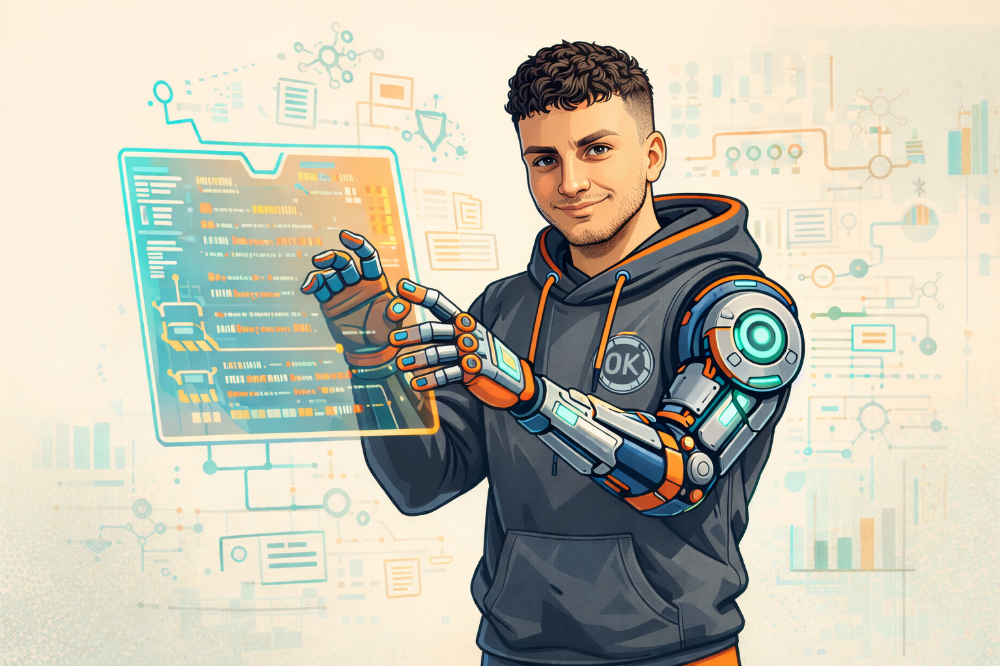

BUILDER
ARCHITECT
CREATOR
Hi, I’m Ohad Krispin.
I’m a B.Sc. Information Systems graduate, specializing in Artificial
Intelligence, with a strong focus on building real, end to end
products.
I work across data analysis, visualization, and modern web development, using AI and advanced prompt engineering to architect and build complex applications
from scratch, from concept to a live, working product.
My projects, WeaverBI and Coffocus, reflect how I use AI not just as a tool, but as a core part of the
development process. This includes designing systems, shaping data flows, building interactive dashboards,
and turning ideas into usable, production ready software.
I enjoy solving practical problems, creating clean and intuitive interfaces, and pushing the boundaries of
how AI can accelerate and enhance product development.

WEAVERBI
Business Intelligence & Chart Builder Platform. Implemented dashboards, dataset manager, chart builder, and advanced visualizations (3D charts, heatmaps, scientific graphs). Includes integrated database (Postgres on Render) and Google OAuth authentication.
COFFOCUS
Interactive Productivity Workspace. Designed OS-like workspace including widgets, dock navigation, custom boards, and animated UI components. Integrated Supabase Postgres.